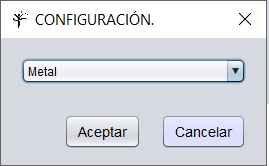
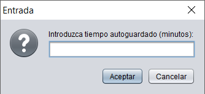

En el menu desplegable podra cambiar el aspecto visual de la aplicacion mediante LookFeel y el tiempo de autoguardado para que todos aquellos cambios que realice se graben por seguridad.
La funcion de autoguardado aparece por defecto desmarcada, guardando los cambios cada cinco minutos, si desea cambiar ese tiempo, tan solo debe marcar autoguardado y a continuacion indicar el tiempo que desea, en minutos, para que se realice dicha funcion.
